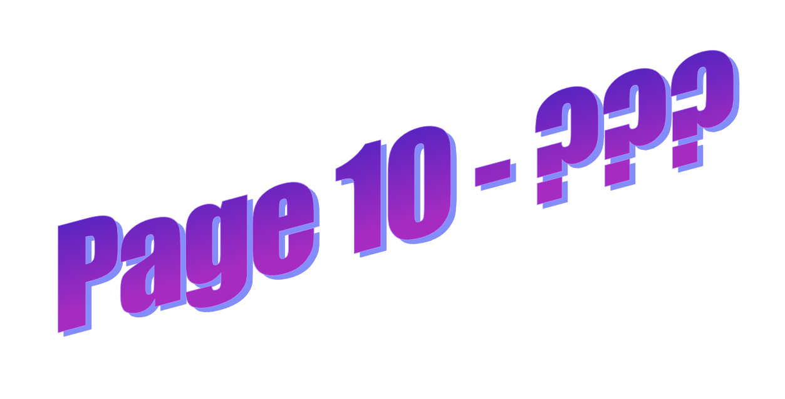
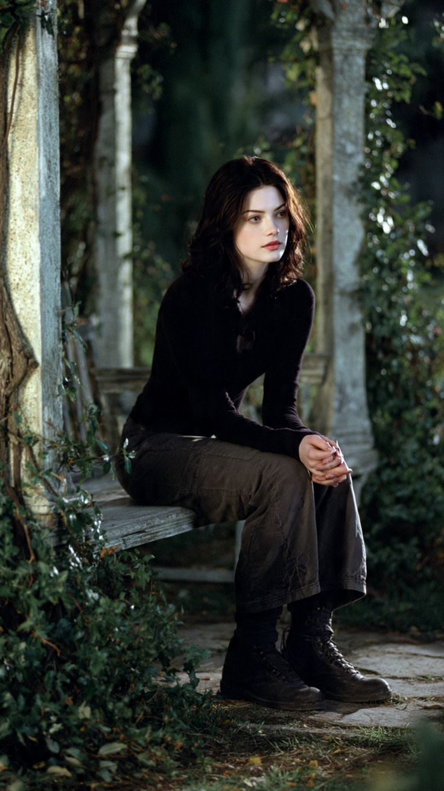

La vendeuse reste silencieuse un peu plus longtemps que nécessaire. Puis elle prend une feuille fine, presque translucide, dans un tiroir du comptoir. Elle ne te la tend pas immédiatement. Elle la regarde d’abord, comme si elle vérifiait quelque chose d’invisible. Ensuite seulement, elle la pose dans ta main.

Sans explication.
L’encre est noire, fine, presque trop régulière pour être écrite à la main.

Personne ne remarque ce qui vient de se glisser dans ta main. La feuille est légère, à l'instar de ces papiers de soie pour emballer un cadeau précieux. Mais tu as la sensation étrange qu’elle ne dépend plus vraiment du poids du papier.
